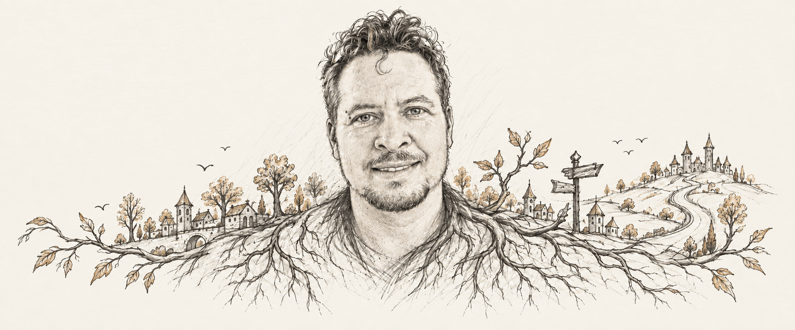
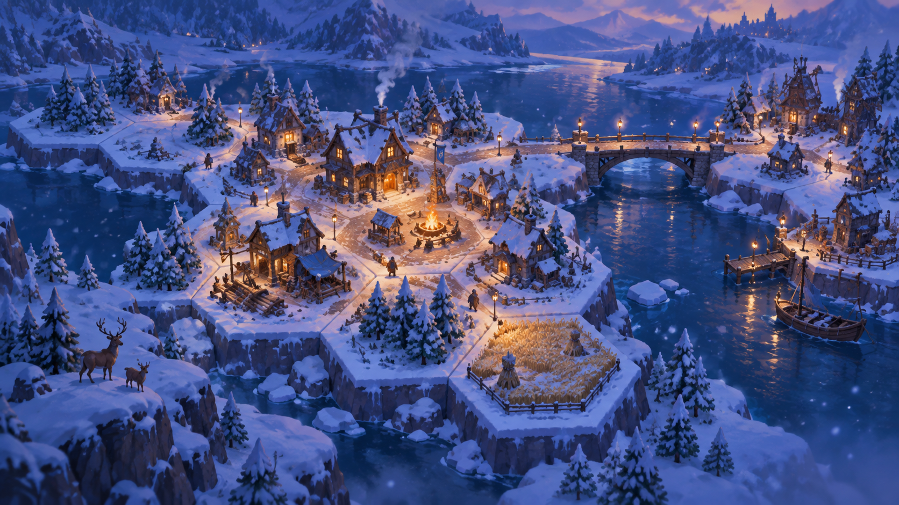
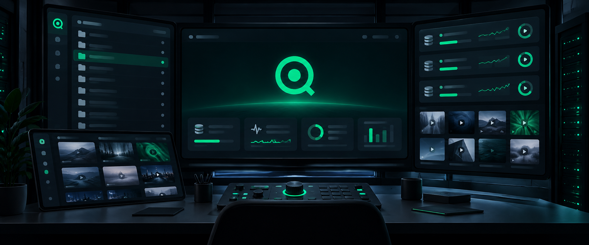

Groot
A small system for turning effort into something you can see.
Open project ↗Builder / consultant / curious human
Tools, games, systems, and the occasional rabbit hole.
CV
Selected projects
A small system for turning effort into something you can see.
Open project ↗A city builder about roads, resources, and the places they make.
Open project ↗
A desktop control room for servers, files, and the media around them.
Open project ↗
A space strategy game where fleets are only half the problem.
Open project ↗Outside the screen
An indoor treehouse in the living room, designed in Autodesk and built in wood. 2023.